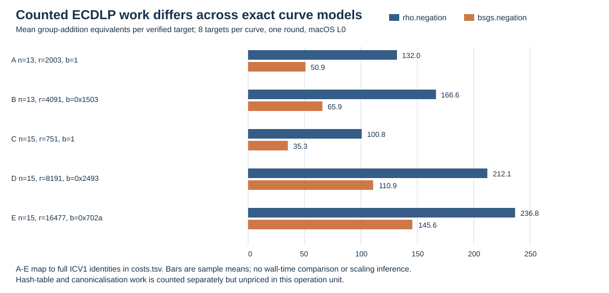
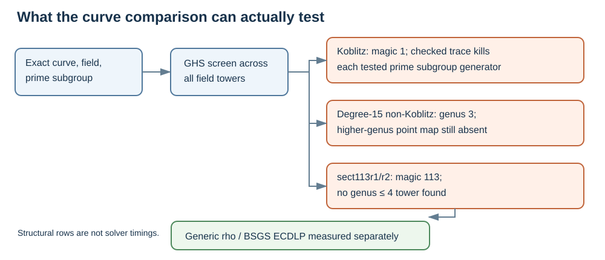

9 October 2026 · Source: research/ghs_curve_comparison_20261009/RESULT.md
Question. How do ECDLP costs and characteristic-two GHS structure vary across exact binary-curve models, including models over the same field? The executable methods here are generic Pollard rho and BSGS. The higher-genus GHS solver is not implemented, so this report assigns it no ECDLP cost.

Five registered models; eight independent targets each; one cold run per method and target. The native ecbench session ECBS1hd395a1344225 verified all 80 scalars and exact replay reproduced all 80 records. Unit: S = counted group-addition equivalents / sqrt(r). Every figure is a counted lower bound because some native work, including hash-table work, is unpriced. The host earned L0; wall time is excluded.
| Curve ID suffix | Prime r | rho.negation mean S | bsgs.negation mean S | BSGS / rho | BSGS entries |
|---|---|---|---|---|---|
| t181-515ee569 | 2,003 | 2.949 | 1.137 | 0.385 | 24 |
| t11-f036dc01 | 4,091 | 2.605 | 1.030 | 0.395 | 33 |
| tm275-2d22ff5d | 751 | 3.676 | 1.286 | 0.350 | 15 |
| t5-d9fb183e | 8,191 | 2.344 | 1.225 | 0.523 | 47 |
| tm185-565c1669 | 16,477 | 1.844 | 1.134 | 0.615 | 66 |
Full IDs are icv1-f2m13-t181-515ee569, icv1-f2m13-t11-f036dc01, icv1-f2m15-tm275-2d22ff5d, icv1-f2m15-t5-d9fb183e, and icv1-f2m15-tm185-565c1669, in row order. The normalized ratios are paired on the same target. BSGS is a memory tradeoff; no physical speed ratio is claimed.
At degree 15, the mean absolute rho count rises from 100.75 on the r=751 model to 212.125 and 236.75 on the r=8,191 and r=16,477 models. Mean BSGS counts are 35.25, 110.875, and 145.625. These are descriptive eight-target, one-round observations, not a scaling fit.

| Model | Best magic / genus | Checked trace outcome | Current status |
|---|---|---|---|
| 13-bit Koblitz control | 1 / 0 | Generator killed | No subgroup transfer by trace |
| 13-bit non-Koblitz | 13 / 4095 | Curve not subfield-defined | No genus ≤ 4 row |
| 15-bit Koblitz control | 1 / 0 | Generator killed | No subgroup transfer by trace |
| 15-bit non-Koblitz, b=0x2493 | 3 / 3 | Curve not subfield-defined | Higher-genus model/map pending |
| 15-bit non-Koblitz, b=0x702a | 3 / 3 | Curve not subfield-defined | Higher-genus model/map pending |
A low GHS genus is a structural diagnostic. The Koblitz traces kill the tested prime subgroup generators; the genus-three cases require a smooth Jacobian model, point map and solver before any ECDLP cost can be measured. The separately frozen four-size Koblitz panel had 107 verified and 13 exhausted records; all exhaustions belonged to the signed-Frobenius rho arm. Its audit passed with 107 deterministic verified replays. The incomplete arm is retained as a diagnostic.
Exact checks of SEC 2's sect113r1 and sect113r2 give magic 113 and genus 2^112−1 for their only proper tower, with no genus-four candidate. Neither curve model meets the checked trace precondition over F₂. Their subgroup orders give a derived generic square-root scale near 2^56 operations; no ECDLP solver was run at that size. The earlier binary F₂¹⁹² fixture transports an order-two point. NIST P-192 is a prime-field curve with derived generic scale near 2^96 operations and is outside this binary GHS screen.
Session ECBS1hd395a1344225: audit SHA-256 22cf241164e32af826128fdfc2e0ad1c770768b071c71d54d34e52409b67b973. Earlier panel ECBS1h5a490d269b02: audit SHA-256 bff5841f0732c0289aedc8fb37a6a89ab6d35a5662b0ef6cd7bfaa7b75aaa071. The Markdown report links the sealed sessions, per-curve intervals, commands, screen JSON, trace JSON, protocols, host and source hashes.
Next construction gate: for a specific genus-three model, construct and verify the smooth Jacobian, point transfer and subgroup order, then measure a complete index-calculus pipeline against rho on the same target. Until that gate passes, the ECDLP difference demonstrated here is the measured generic-method difference across exact subgroups.